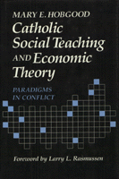

<body bgcolor="#FFFFFF" text="#000000" link="#0000FF" vlink="#CC0000" alink="#CC0000"><center><hr width="350" size="1" align="center" noshade>Analyzes the official Catholic School Teaching from the perspective of the secular, economic, and political sciences<hr width="350" size="1" align="center" noshade><p><a href="https://cdcshoppingcart.uchicago.edu/Cart/ChicagoBook.aspx?ISBN=9780877227540&&PRESS=temple" target="_top">Buy this book!</a> | <a href="https://cdcshoppingcart.uchicago.edu/Cart/Cart.aspx?PRESS=temple" target="_top">View Cart</a> | <a href="https://cdcshoppingcart.uchicago.edu/Cart/Cart.aspx?PRESS=temple" target="_top">Check Out</a></p><p></p></center><!--none//--><h1>Catholic Social Teaching and Economic Theory</h1>
<H2>Paradigms in Conflict</H2>
<h3>Mary E. Hobgood, foreword by Larry L. Rasmussen</h3>
<P>cloth 0-87722-754-3 $44.50, Jan 91, <FONT COLOR=#990033>Out of Stock Unavailable</FONT>
<BR> 256 pp
</P><BLOCKQUOTE><I>"This excellent book is one of the few scholarly investigations that analyze the official Catholic School Teaching from the perspective of the secular, economic, and political sciences."</I>
<br>&#151<b>Gregory Baum</b><I></I></BLOCKQUOTE>
<p>Drawing upon a lively debate within the field of social theory, Mary E. Hobgood argues that the paradigm conflict between orthodox neoclassical and radical economic models is reflected in Catholic documents that address economic justice. She maintains that dynamics within Catholic teaching are explicable only in terms of this clash of fundamentally opposing perspectives.
<p>This study shows how normative values of social justice are always tied to a particular social theory or model of society. When assumptions shift from one model to another, the concrete actions mandated by these justice norms change significantly. Consequently, the Catholic social justice tradition contains not only two mutually exclusive analyses of capitalist dynamics, it also has very different interpretations of such norms as economic democracy and a preferential notion for the poor. Hobgood argues that the Church needs to clarify the economic models that inform its social justice mandates and to assess those models for their compatibility with the Church�s moral concerns, otherwise, Catholic social teaching�s interpretations of justice and how Christians must act for it remain inconsistent.
<BR>&nbsp;<h2>Reviews</h2>
<p><I>"[Mary Hobgood] asks what Catholic teaching itself has assumed about the way the economy works, and she brings to the fore hidden assumptions that are fundamental to the policy prescriptions in Catholic teaching.... The result is a clear picture of the divided mind and practice of Catholicism when confronting twentieth-century economic realities. If Catholic teaching did us all the service of finding a strong moral and theological voice for a critique of secular economics, Dr. Hobgood points the way to make that voice a clearer one, more aware of its limitations and of its potential."</I>
<br>&#151<b>Larry L. Rasmussen</b>, from the Foreword
<p><I>"This is one of the most enlightening analyses of Catholic social teaching that I have ever read. It goes far beyond the available commentaries because of its sharp focus on the economic&#151not just as the content of the teaching, but its provision of the theoretical framework in which to situate the economic content. The book is very insightful with regard to Catholic social teaching, but I think her exposition holds great value for the analysis of World Council of Churches' positions and the positions of any denomination. Even beyond that, her models throw light on the daily battles within any church institution that is working for justice and peace while at the same time engaging in the compromises and contradictions required to maintain itself within the current economic system."</I>
<br>&#151<b>Marie J. Giblin</b>, Maryknoll School of Theology
<BR>&nbsp;<h2>Contents</h2><P>
<p>Foreword &#150 Larry L. Rasmussen
<br>Preface
<br>Acknowledgments
<br>Abbreviations
<br>1. Economic Theory: A Necessary Tool for Catholic Social Analysis
<br>2. Early Modern Roman Catholic Economic Teaching: 1891-1931
<br>3. Economic Teaching from John XXIII to Puebla: 1961-1979
<br>4. The Social Encyclicals of John Paul II: 1981-1986
<br>5. Canadian and U.S. Bishops' Documents: 1983 and 1986
<br>6. Paradigms in Conflict: The Need for Coherence and Commitment
<br>Selected Bibliography
<br>Index
</P><BR>&nbsp;<H2>About the Author(s)</H2>
<P><b>Mary E. Hobgood</b> is Assistant Professor of Religious Studies in the Department of Philosophy at the University of Maine, Orono.</P>
<BR><H2>Subject Categories</H2>
<p><A HREF="/tempress/religion.html" TARGET="_top">Religion</a>
<BR><A HREF="/tempress/sociology.html" TARGET="_top">Sociology</a>
</p>
<p align="center"><a href="https://cdcshoppingcart.uchicago.edu/Cart/ChicagoBook.aspx?ISBN=9780877227540&&PRESS=temple" target="_top">Buy this book!</a> | <a href="https://cdcshoppingcart.uchicago.edu/Cart/Cart.aspx?PRESS=temple" target="_top">View Cart</a> | <a href="https://cdcshoppingcart.uchicago.edu/Cart/Cart.aspx?PRESS=temple" target="_top">Check Out</a></p><p><font face="Arial" size="1"><a href="copyright.html" onMouseOver="window.status='Web Copyright Policy';return true;" onMouseOut="window.status=''" title="Web Copyright Policy">&copy;</a> 2015 <a href="http://www.temple.edu" target="new" onMouseOver="window.status='Link to Temple University home page';return true;" onMouseOut="window.status=''" title="Link to Temple University home page">Temple University</a>. All Rights Reserved. http://www.temple.edu/tempress/titles/710_reg.html</font></p>